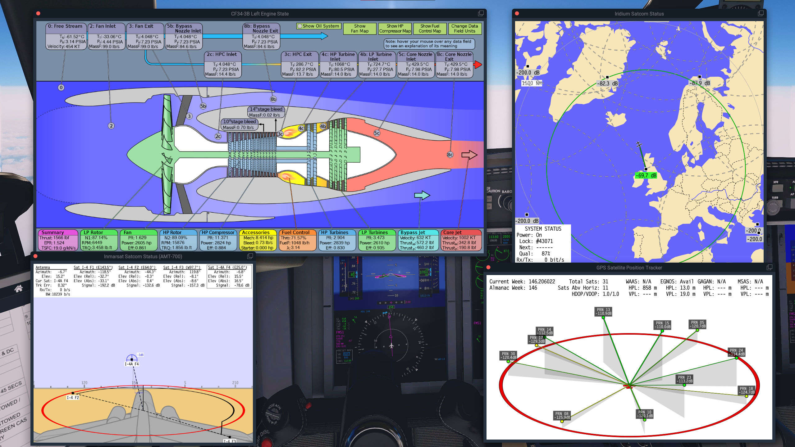
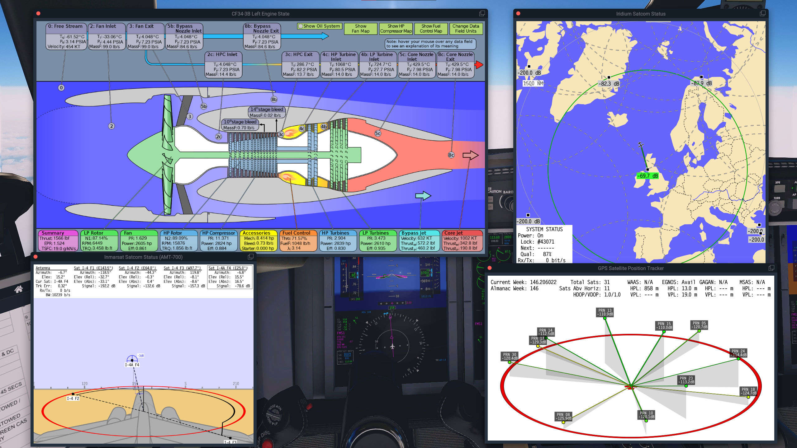

Welcome to my page dedicated to entertainment. In my free time, I like to explore the latest computer innovations and try new things. For example, I recently set up a PiHole to block online ads, as well as a smart mirror with a Raspberry Pi to display useful information such as weather and news.
But what I love most is spending time on flight simulators. I use software such as MSFS, X-Plane, Prepar3D, and DCS World to simulate the complex systems of airplanes and explore new landscapes. Studying the inner-workings of these engineering marvels is something I particularly enjoy.
%20Large.png)

 


Beyond the digital realm, I find joy in staying active and creative. I took swimming lessons for around 10 years, played the piano for a decade, and the transverse flute for three years. And in winter, you'll often find me on the ski slopes, where I've even earned my bronze chamois and silver arrow. Skiing is my escape, a chance to appreciate in the wonders of nature and clear my mind.